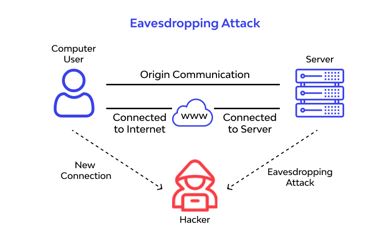

A distant representative interfaces over an open organization and sends across some imperative business data to his associate. The data is being sent over the open organization, and the digital assailant quietly interrupts all the data on the organization traffic. Presently, to forestall an Eavesdropping assault, the representative might decide to interface over a Virtual Private Network, which is moderately more secure than an open organization. However, this again is definitely not a full-verification strategy (particularly in the event that you don't have the foggiest idea how secure is your VPN) to battle listening in assault; the assailant puts a piece of programming or organization sniffers in the organization pathway that will screen, record and assemble all the basic business data..
How do eavesdropping attacks work?
With eavesdropping, aggressors can utilize different strategies to dispatch assaults that ordinarily include the utilization of different listening in gadgets to tune in on discussions and organization action.
A normal illustration of an electronic listening gadget is a covered bug truly positioned in a home or office. This could happen by leaving a bug under a seat or on a work area, or by disguising a receiver inside an unnoticeable article like a pen or a sack. This is a straightforward methodology however could prompt more complex, hard to-distinguish gadgets being introduced, like amplifiers inside lights or roof lights, books on a shelf, or in photo placements on the divider.
Regardless of the multitude of innovative advances making computerized listening in progressively simple, numerous assaults actually depend on blocking phones. That is on the grounds that phones have electric force, inherent receivers, speakers, space for concealing bugs, and are not difficult to rapidly introduce a bug on. Snoopping aggressors can screen discussions in the room the phone is in and calls to phones elsewhere on the planet.
Cutting edge modernized telephone frameworks make it conceivable to catch telephones electronically without direct admittance to the gadget. Aggressors can convey messages down the phone line and communicate any discussions that happen in a similar room, regardless of whether the handset isn't dynamic. Additionally, PCs have modern specialized instruments that empower listening in aggressors to catch correspondence action, from voice discussions, online visits, and even bugs in consoles to follow what clients are composing.
PCs likewise discharge electromagnetic radiation that refined busybodies can use to remake a PC screen's substance. These signs can be conveyed up to a couple hundred feet and expanded further through links and phone lines, which can be utilized as radio wires.
Types of eavesdropping attacks
- Pickup Device
-
Assailants can utilize gadgets that get sound or pictures, like amplifiers and camcorders, and convert them into an electrical configuration to listen in on targets. In a perfect world, it will be an electrical gadget that utilizations power sources in the objective room, which dispenses with the requirement for the aggressor to get to the space to re-energize the gadget or supplant its batteries.
Some listening gadgets are equipped for putting away advanced data and sending it to a listening post. Aggressors may likewise utilize small scale intensifiers that empower them to eliminate foundation clamor.
- Transmission Link
-
A transmission interface between a pickup gadget and the assailant's collector can be tapped for listening in purposes. This should be possible as a radiofrequency transmission or a wire, which incorporates dynamic or unused phone lines, electrical wires, or ungrounded electrical courses. A few transmitters can work constantly, yet a more refined methodology includes far off initiation.
- Listening Post
-
A listening post is utilized to communicate discussions caught by bugs on phones. At the point when a phone is gotten to settle on or take a decision, it triggers a recorder that is consequently wound down when the call is finished.
Listening posts are secure regions in which signs can be checked, recorded, or retransmitted by the assailant for handling purposes. It tends to be found anyplace from the following space to the phone up to a couple of squares away. The listening post will have voice-initiated hardware accessible to snoop on and record any action.
- Powerless Passwords
-
Powerless passwords make it simpler for assailants to acquire unapproved admittance to client accounts, which gives them a course into corporate frameworks and organizations. This incorporates programmers having the option to think twice about correspondence channels, catch movement and discussions among partners, and take delicate or important business information.
- Open Networks
-
Clients who interface with open organizations that don't need passwords and don't utilize encryption to communicate information give an optimal circumstance to aggressors to listen in. Programmers can screen client action and sneak on correspondences that happen on the organization.
Eavesdropping Attack Prevention
- Avoid using public Wi-fi networks.
- Use a virtual private network (VPN).
- Set strong passwords and change them frequently.
- Don't repeat passwords for every site you register in.
- Protect your pc with antivirus and keep it updated.
- Use a personal firewall.
- Avoid clicking on shady or dodgy links.
- Make sure your phone is using the latest version available of its operating system
- Download apps only from trusted sources like Android or Apple stores.
- Military-grade encryption is a great way to defend against an eavesdropping attack as it will take attackers around 500 billion years to decode it.
Examples of Eavesdropping Attacks:
The attackers are usually looking for sensitive information that can be sold for criminal purposes that including call recordings, business strategies, and financial details.
Some examples are :
- Spouse ware allows people to eavesdrop on their significant others by tracking their smartphone use or location details and keeping a check on all of their activities
- Getting users' login credentials for hacking their Facebook accounts or email ids or stealing their card details when they are connected to public wi-fi networks like the ones that are freely available at railway stations or cafes etc.
- Smart voice recognition assistants like Amazon Alexa and Google Home are also vulnerable to eavesdropping because of their "always-on" mode which is a big threat to users' privacy.
- Wireshark was a sniffing program that caused Android smartphone users a lot of trouble back in 2011. In this attack authentication tokens were sent all over an unencrypted Wi-Fi network which resulted in Wireshark viewing, stealing, modify and even deleting all the confidential data.
- In 2015 even iOS suffered when over 25,000 iOS apps were vulnerable to eavesdropping attacks because of a bug in the open-source code library AFNetworking due to which HTTPS encryption could be taken down.